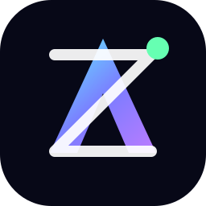

AI + MCP
Track practical AI workflows, agents, connectors, tools, and the Model Context Protocol ecosystem.

XTIANZAI • MCP • MANGOS • Markets • World Cup 2026 • Performance Cars
XTIANZ is a clean, fast, GitHub Pages-ready hub for AI trends, Model Context Protocol, market movers, investing tools, tech news, World Cup 2026 fan zones, and performance cars.
Google Search
Use this search bar to look up AI, MCP, MANGOS, markets, World Cup 2026, performance cars, and other topics on Google.
Note: this visible bar searches Google immediately. Google Programmable Search monetization requires a separate Search Engine ID from Google; the AdSense publisher ID alone will not render the search widget.
Start Here
A simple guide to the site: AI and MCP explainers, MANGOS company signals, market movers, World Cup 2026 fan culture, and performance cars.
Track practical AI workflows, agents, connectors, tools, and the Model Context Protocol ecosystem.
Meta, Anthropic, Nvidia, Google, OpenAI, and SpaceX — the companies shaping AI, compute, cloud, models, and space.
Watch AI infrastructure, semiconductor volatility, top movers, public proxies, and clearly disclosed investing-tool links.
Follow fan zones, local watch-party energy, team storylines, and D.C.-area experiences.
Sports cars, Porsche 911s, BMW M, Lexus F, EV performance, car news, and enthusiast buying signals.
Use the weekly signal format for what moved, why it matters, and what to watch next — with clearly disclosed referral and ad sections.
MANGOS
A focused watchlist for the companies shaping AI, cloud, chips, models, agents, consumer platforms, and space technology — now with official Instagram links.
Open-weight AI, social platforms, ads, wearables, and consumer AI assistants.
Claude, enterprise assistants, frontier model safety, and AI tools for knowledge work.
GPUs, AI factories, networking, data-center platforms, robotics, simulation, and accelerated compute.
Gemini, DeepMind, search, cloud AI, TPUs, Android, YouTube, and productivity intelligence.
ChatGPT, API platforms, agents, multimodal AI, coding tools, and new interfaces for work.
Starship, Starlink, launch economics, satellite internet, rockets, and private space markets.
MANGOS Watchlist
Some MANGOS names trade publicly, while others are private. This table keeps the distinction clear so readers do not confuse company news with directly investable stocks.
| Company | Status | Ticker / Proxy | Why it matters |
|---|---|---|---|
| Meta | Public | META | Consumer AI, ads, Llama, smart glasses, and social distribution. |
| Anthropic | Private | No direct ticker | Claude, enterprise AI, safety positioning, and cloud partnerships. |
| Nvidia | Public | NVDA | AI GPUs, networking, software, data-center platforms, and robotics. |
| Public | GOOGL / GOOG | Gemini, DeepMind, search, YouTube, Google Cloud, and TPUs. | |
| OpenAI | Private | No direct ticker | ChatGPT, agents, APIs, enterprise adoption, and infrastructure deals. |
| SpaceX | Private | No direct ticker | Starship, Starlink, launch cadence, satellite internet, and space infrastructure. |
MCP Lab
MCP helps AI assistants connect to tools, files, data, code repositories, calendars, and enterprise systems in a structured way. For XTIANZ, it is the bridge between AI ideas and real workflows.
Tech Stocks
Live market widgets are provided by TradingView and work on GitHub Pages without a backend. For companies without standard public tickers or easy retail access, this board tracks public proxies, official updates, market news, and major trend signals.
AI and semiconductor stocks can move fast when expectations shift around data-center spending, interest rates, chip demand, valuation, regulation, and earnings guidance. Use this board to track the theme, then verify prices with your brokerage before making any decision.
Tools I Use
Use these as starting points for research, not as investment advice. Referral links are clearly disclosed before you click.
A simple investing app to explore portfolios, themes, and modern investing ideas. XTIANZ may receive a referral reward if you sign up and qualify through the link.
Try AlineaReferral disclosure: This is a personal referral link. I may receive a reward if you sign up and meet Alinea’s requirements. This is not financial advice.
Use Yahoo Finance, Nasdaq, Finviz, MarketWatch, and TradingView to compare gainers, losers, volume, and sector moves.
Check filings, earnings dates, valuation, fees, liquidity, and your own financial goals before buying any stock or fund.
GPUs, networking, data-center platforms, and AI factory buildouts. Watch earnings, margins, Blackwell/next-gen supply, and hyperscaler capex.
Ads, AI assistants, open-weight models, smart glasses, and massive social distribution. Watch AI monetization and ad growth.
Gemini, DeepMind, YouTube, Android, Google Cloud, and TPUs. Watch search disruption risk and cloud AI growth.
Cloud, Copilot, enterprise productivity, and OpenAI partnership exposure. Watch Azure AI demand and enterprise adoption.
A broad chip-sector proxy. Watch whether AI hardware demand spreads beyond one or two mega-cap names.
Enterprise AI workflow and data-platform demand. Watch government/commercial growth and valuation risk.
Track Starship, Starlink, launch cadence, satellite internet economics, capital markets news, and official company updates.
Track product launches, consumer growth, enterprise adoption, infrastructure deals, and competitive pressure from Anthropic, Google, and Meta.
Track Claude adoption, enterprise deals, model releases, compute partnerships, and safety positioning.
Private AI Giants
These companies are not ordinary public stocks. XTIANZ tracks them through official updates, product launches, funding news, partner exposure, infrastructure demand, and related public-market proxies.
Watch ChatGPT growth, API adoption, agent features, enterprise deals, model releases, and infrastructure partnerships.
OpenAI news →Watch Claude adoption, enterprise use, safety positioning, cloud partnerships, and competition against OpenAI and Google.
Anthropic news →Watch Starship tests, Starlink subscriber growth, launch cadence, satellite internet economics, and private-market valuation news.
SpaceX updates →Top Movers Links
Stock and investing-tool content on XTIANZ is for education, news, and entertainment only. It is not financial advice. Some links may be referral or sponsored links, which means XTIANZ may receive a reward if you sign up and qualify. Always verify live prices, filings, risks, fees, and your own goals before investing.
World Cup 2026
The 2026 tournament is bigger, more social, and more local than ever — with 48 teams, three host countries, giant public-viewing experiences, and fan culture spilling beyond stadiums.
Track the free National Mall fan-zone experience between 3rd and 4th Streets near the U.S. Capitol area, including match viewing, cultural programming, youth activities, food, music, and family-friendly activations.
Giant screens, food, music, interactive zones, and sponsor activations make fan festivals central to the tournament experience.
Even without local stadium matches, the National Mall Fan Zone gives the DMV a major public World Cup hub.
Philadelphia and New York/New Jersey are key nearby host-region experiences for fans willing to travel from Northern Virginia.
Team USA viewing, knockout-stage watch parties, immigrant-community support, and local bars will drive the biggest crowds.
Reels, TikTok-style clips, fan outfits, food, chants, and downtown crowd shots will become part of the World Cup story.
Expect crowding around major public spaces and watch-party locations. Metro, walking, and early arrival will beat parking headaches.
World Cup Links
News Radar
The headline cards below pull from a public Hacker News API when available. The official source buttons always work.
Performance Cars
A dedicated lane for Porsche 911s, BMW M cars, Lexus performance models, EV performance, supercars, auction trends, and the sites worth checking before you buy, drive, or dream.
Porsche 911 generations, BMW M models, Lexus F cars, Acura Type S, Corvette, EV performance, manual-transmission gems, supercar launches, and enthusiast market trends.
Car Watchlist
Best all-around sports-car benchmark. Track 996/997/991/992 prices, manual cars, C4S, Turbo, GT3, and service history.
Track M2, M3, M4, M5, M240i, and xDrive performance models for daily usability and tuning potential.
Track IS 500, older IS F, RC F, LC 500, V8 reliability, and long-term ownership costs.
Track TLX Type S, Integra Type S, and value against German rivals.
Track C8 Stingray, Z06, E-Ray, and used-market pricing against Porsche and exotic competitors.
Track BMW i4 M50, Tesla Performance, Lucid, Porsche Taycan, and charging-network changes.
Top 5 Car Sources
Best for new-car news, sports-car rankings, instrumented testing, and buyer-friendly performance reviews.
Latest car news → Sports car rankings →Best for enthusiast culture, performance cars, motorsports, track-focused stories, and high-end driving features.
Visit Road & Track →Best for broad car news, expert reviews, comparison tests, rankings, first drives, and industry trend coverage.
Latest auto news →Best for entertaining sports-car reviews, supercar coverage, exotic performance machines, and global enthusiast flavor.
Sports car reviews →Best for breaking car news, model reveals, scoops, original features, enthusiast commentary, and car culture.
Latest from The Drive →Weekly XTIANZ Signal
Use this format when you want to publish quick takes without running a newsletter signup.
Next Enhancements
Future upgrades that would make the site feel more like a serious AI, markets, sports-culture, and performance-car media hub.
Turn the XTIANZ Signal format into short weekly posts covering AI, MANGOS, market movers, World Cup 2026, and performance cars.
Create separate pages for MCP basics, MANGOS companies, car watchlists, World Cup D.C. guide, and market movers.
Add a visual AI-stock heat map for NVDA, META, GOOGL, MSFT, AMD, AVGO, PLTR, SMH, and QQQ.
Build a local guide for D.C., Northern Virginia, bars, fan zones, Metro tips, and watch-party hotspots.
Add quick buyer notes for 911, M cars, Lexus F, Corvette, Acura Type S, and EV performance models.
Add Open Graph share images, structured data, richer page titles, and a clean disclosure pattern for referral links.